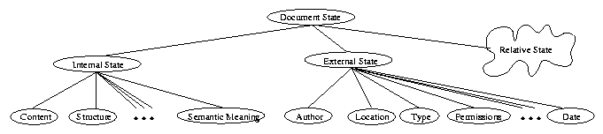

Next: Straw
Up: Documents
Previous: Documents
We are now ready to define a new model for documents, which will be
called the document state model. A document can be seen as an
entity present at some point in time. The document as a unit has some
state within that instant of time. This document will also have some
properties and relations. The properties of the document and its
relationship to other documents can also be seen as units of
information with state.

Figure: A breakdown of document state
Figure  illustrates this
model of document state. Some portions of the document state can be
derived automatically, others by semantic interpretation of a user
when reading the document. We can separate the document state into
three constituent parts (based on properties and relations):
illustrates this
model of document state. Some portions of the document state can be
derived automatically, others by semantic interpretation of a user
when reading the document. We can separate the document state into
three constituent parts (based on properties and relations):
- Internal State: Properties that are of this type generally
refer to the content or internal representation of the document.
For example we can say that a document contains the word
``apple.'' Generally, things that are part of the internal state of
the document are properties we can define by looking inside the
document. These properties may be non-obvious, and may be derived
by some semantic understanding of the document
 .
. - External State: Properties that can be considered
meta-data are generally held as part of external state. The author,
date of publication, and location are good examples of external state.
However, it is important to note that properties are not necessarily
exclusive (i.e. a property can be part of more than one state). For
example, the author of a document can be ``David'' by virtue of the
fact that we know that David wrote it and emailed it to us. This
knowledge is part of some external state. By reading the document
we can find that it is ``by: David.'' So we have derived an
authorship relation by semantic understanding, and so the author
being ``David'' is also part of the internal state.
- Relative State: There are a set of fuzzy properties of a
document that encapsulate relationships between one document and
another. One document can cite another or link to it. These
relationships can sometimes be derived automatically. Sometimes,
however, the relationships are derived based on some semantic
understanding of a user. This semantic undestanding may be obvious
to everyone, to a limited group of users, or to the single user
alone. For example, one document can be related to another by
virtue of the fact that the reader read both while eating a
chocolate ice cream cone. As stated before, we will place
non-trivial inter-document properties in this category.
The final important idea to consider is that state of a document may
change. We will make the claim that documents present state is also a
function of its previous sates. For example, while a document (call
it myThesis) may have been located on goose.lcs.mit.edu,
it may have subsequently moved to haystack.lcs.mit.edu. A user
looking for the document myThesis by constraining his search
system to the previous location may come up empty handed if the system
does not remember that the document used to be on
goose.lcs.mit.edu. Any piece of state that has previously
existed may be of importance to the user who will later look for the
document based on this previous state. Additionally, the more
expressive an implemented system can be in maintaining all the state
information of a given document, the better it will be able to respond
to user queries.
Next: Straw
Up: Documents
Previous: Documents
Copyright 1998, Eytan Adar (eytan@alum.mit.edu)